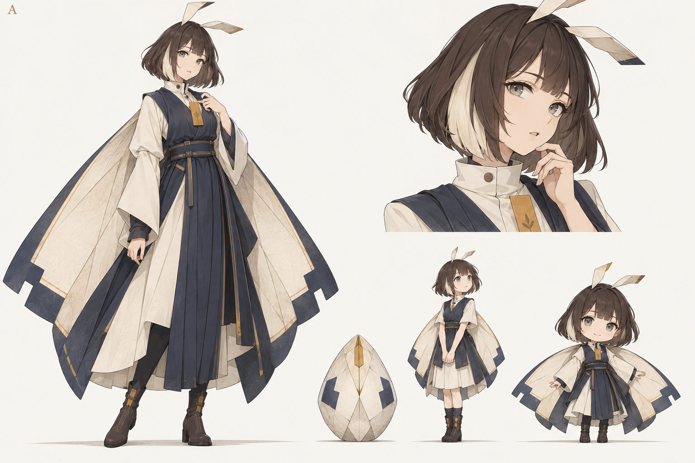

COMPANION IDENTITY & EMBODIMENT
先认识她，再决定她的身体。
暂定保留绫页，成熟体采用正常比例全身立绘。Q 版留作桌宠参考，另外两个方向先冻结。
概念参考图 / 布局示意
不接入真实账号、图片或业务
留影小屋
她住的地方
窗外是雾屿。
窗内留一点位置给相处。
窗内留一点位置给相处。
一张由你选择的图片
未来纪念品留位
绫页
GALLERY
图片仍然是主角
山间 / 图片占位
街角 / 图片占位
海岸 / 图片占位
手作 / 图片占位
傍晚 / 图片占位
林地 / 图片占位
伙伴待在侧栏里。这里的图块仅用于判断视觉主次；不代表已授权喂养。
CONVERSATION
靠近一点说话
绫页同一角色的半身视角
场景示例：用户主动展示一张城堡图
这张图，我想给你看看。
绫页
只谈画面，不替用户编造经历。
对话输入区示意未连接
功能关闭预览
图库照常可用
伙伴入口收起，不保留悬浮球或虚构的在线状态。
SMALL-SIZE REVIEW
正常比例的小尺寸预览
同一张成熟体全身立绘，三个显示尺寸。Q 版不再用作 Web 成熟体。
IDENTITY DNA
DESKTOP PET REFERENCE
Q 版保留，留给桌宠方向。
用于以后参考 Codex 宠物形式的探索，暂不制作桌宠。它不是幼体，也不再替代 Web 里的成熟体立绘。
CHARACTER EXPLORATION
从卵到她，还是同一位。
